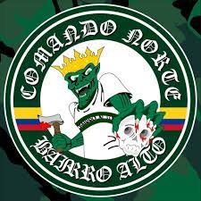

vangogh
vangogh
Vincent Willem van Gogh (holandês: [ˈvɪnsɛnt ˈʋɪləm vɑn ˈɣɔx] ( ouça); Zundert, 30 de março de 1853 – Auvers-sur-Oise, 29 de julho de 1890) foi um pintor pós-impressionista neerlandês. Considerado uma das figuras mais famosas e influentes da história da arte ocidental, criou mais de dois mil trabalhos ao longo de pouco mais de uma década, incluindo 860 pinturas a óleo, grande parte das quais, concluídas nos seus últimos dois anos de vida. As suas obras incluem paisagens, natureza-morta, retratos e autorretratos, caracterizados por cores dramáticas e vibrantes, além de pinceladas impulsivas e expressivas, que contribuíram para as fundações da arte moderna e trouxeram distinção para o estilo do pintor.
